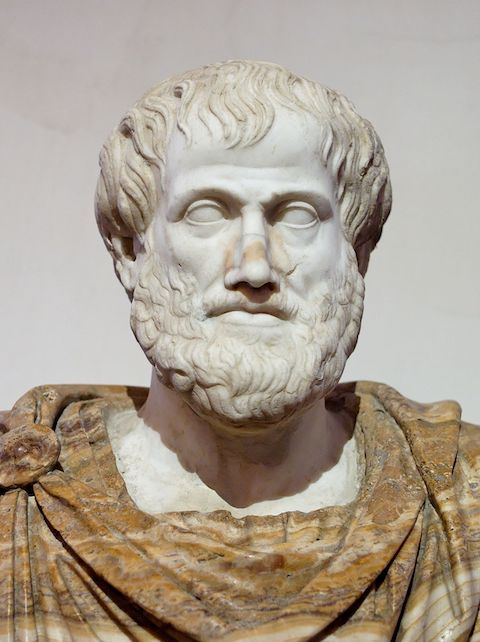
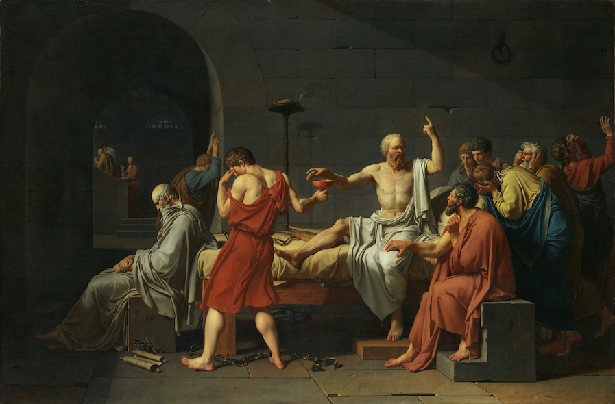

Ethics:
Dr Carey Pridgeon
Created: 2020-10-26 Mon 12:42
Ethics
Where Did Ethics Come From
- A precise origin is unclear, but we are aware of where it got refined, Greece.
- In Ancient Greece the goto guy for ethics or ethos, meaning specifically character, was Aristotle, this guy:

- Socrates also did some good work in the field of ethics, but didn't write anything down, leaving that to Plato instead, then he got into trouble by annoying the people who ran Athens and got forced to kill himself, so that didn't end well.

- Jacques-Louis David - 1787
- Al-Kindi
- Known as the father of Arab philosophy, and also a polymath he was the first of the Islamic peripatetic philosophers, following on from the teachings of the ancient greek philosophers, specifically those who followed the Aristotelean school.
- While he wrote treatises on Ethics, much of his work is now lost, and known mostly by his influence on other scholars.
- BBC Podcast on Al-Kindi
- Al-Kindi - (801 - 872)
- Al-Farabi, ref
- Yet another polymath, these people just keep popping up, don't they. He wrote on diverse subjects. Ethics (obviously, or I wouldn't have included him in this lecture) political philosophy, metaphysics, and logic.
- In addition he was a cosmologist, mathematician and music scholar.
- His concept of Ethics, much like that of todays Open Source people, was aimed at creating a fairer society, in the vein of Plato's ideology.
- He has also been claimed to be a scientist, although this term didn't exist at the time
- Al-Farabi (872 - 950)
- There was no clear distinction in his time, or for a long time after, between natural philosophy (the investigation of the natural world) and what we now call being a scientist.
- The term did not exist until 1834 when it was coined by Cambridge University historian William Whewell.
- Since then the term has been still been erroneously applied to ancient natural philosophers.
- You studied BCS Ethics in the second year of your degree. That was business ethics, a specific branch of the subject, and one required if you are later take the BCS examination.
- Open Source takes a broader view of ethics, since software as a product is viewed in a different way.
- Some concepts are the same, but in many cases the needs of the developer are also important, where business tends to ignore the interests and rights of individual developers in order to deliver a product.
- Why this matters is because while you need customers to buy in to your product, you also need your developers on board as well.
- The Commercial world is filled with stories of developers who get treated so badly while developing software they leave, so the final product has to be supported by developers new to the product.
- A few links, but this is a large subject, one worth investigating, since it concerns a career you intend to embark on.
- Why people quit (2017), EA and Crunch Time, Game Workers Unite
- Two of those are games related, but the problem isn't.
- Organisations like the Free Software Foundation take Ethical computing to an extreme, claiming no code should be written in exchange for money.
- This, much like Plato's ideal forms linky, is an idea which cannot be realised.
- To use a somewhat extreme edge case, how many people do you think would board a plane when the operating system controlling it was written by someone working without full oversight?
- The HeartBleed event showed us why that shouldn't be allowed to happen.
- I'm not saying Open Source Developers should be paid directly for any specific code, such as the code in the above example, but organised oversight and error checking/testing costs money, because it takes people time to do.
- Any such system would need an ethically sound organisation, with open code written by full time paid members whose pay wasn't linked to coding output, and who oversaw any external contributions.
- What few people seem to realise is, even in the closed source world, most code written isn't bought by the customer directly. Instead it's provided as updates or patches.
- Mozilla is set up in a way similar to this, except they do have a secret branch of code, with security aspects they don't share.
- Similarly, their final build comes from a codebase inaccessible to any but internal developers, and they fold in code from the publicly available code. I can understand why they do this perfectly.
- Given the current climate, with cyber crime being so prevalent, I can't see any reason why an Open Source company would share all of their security code and associated systems.
- Open Source is claimed to be more ethical, but what does this mean?
- I think they say this and hope people will just accept it as not as bad as those commercial companies, but ethics is a little more complex than that.
- Certainly the commercial world can be unethical, I would hope you knew this before taking my class, but I've attempted to demonstrate that you wouldn't board a plane with an operating system written by some random developer releasing his code under the an open licence on Github.
- You'd want a major aircraft builder to have either written, or commissioned it, most likely at a cost of many millions.
- This code could still be Open Source, but the version running on the plane should only come from one place, just as the official build of Firefox only comes from one place.
- The term ethical is too often used without really understanding what it means.
- This is why I started the lecture by referring back to Ethicists from the past, I advise you to look them up.
- It has a much wider meaning than don't rip off customers because it's bad for business, although when I took the class as an undergraduate in 2002 this seemed to be the primary focus.
- Quality of Life, Satisfaction, Not Working Under Duress and a good Work and Home Life Balance.
- These are what ethical practices in business should embody now.
Ethics and Open Source
- You'd think Open Source would require that all software written using this label had to be ethical, yes?
- But how do you define ethical behaviour? I started this lecture by showing ethics has been debated for thousands of years. What is the right way to behave?
- Let's muddy the waters further briefly by returning to Socrates. He fought in the Peloponnesian war, serving in Athens military for most of his life before turning to philosophy and ethics.
- You could say No Open Source Software can be used to develop weaponry, but what about the extremely real problem of leftover armements from conflicts all around the world.
- Bruce Perens thinks that imposing ethical behaviour via a licence is silly and won't work. Primarily because it would be unenforceable if challenged in court linky.
Brief Case Study: What if No Military Application Were Allowed?
- Right now there are an estimated 110 million anti-personnel mines in the ground.
- Most of these are in areas occupied by people without the resources to clear them.
- In Vietnam people are still being killed or maimed by leftover weaponry from the war in the 1960's. Primarily in area's where they grow coffee for use in Instant brands.
- These are not rich farmers, in spite of mass produced coffee like this being the most heavily traded commodity on the stock market.
- 20,000 people are killed each year by landmines. Bosnia and Herzegovina is so heavily covered in mines whole regions are inaccesible and may never be cleared.
- Unless that is major technological changes occur, right now it's simply too dangerous to try in many places, and not worth the risk of one being missed.
- Open Source (both software and hardware) would seem an ideal place for such innovation, but any move in this direction would, of necessity mean co-operation with creators of military hardware, something many Open Source advocates used to oppose, but this opposition appears to waning Military Open Source Community Growing.
- I see this as a good thing myself. Open Source Developers could begin projects on their own, such as ones aimed at clearing leftover ordnance, then look to military funding to take things further.
- This isn't unreasonable, they should clean up after themselves, and it might make things like mines obsolete as weapons. Not a bad thing, since most victims apper to be children, years after the conflict has ended.
- It's not just mines, work is still going on to clear ordnance from World War One, each year human remains are recovered among this ordnance, identified as far as possible and repatriated, so simply blowing them up en-masse isn't an option. If it were these former battlefields would have been cleared a long time ago.
Obligatory XKCD

- Copyright: Randall Munroe
- Mirrored to avoid bandwidth stealing
Licence for this work
- Licensed under Creative Commons Attribution-ShareAlike 4.0 International by Dr Carey Pridgeon 2020
- (Licence does not cover linked images owned by other content creators)